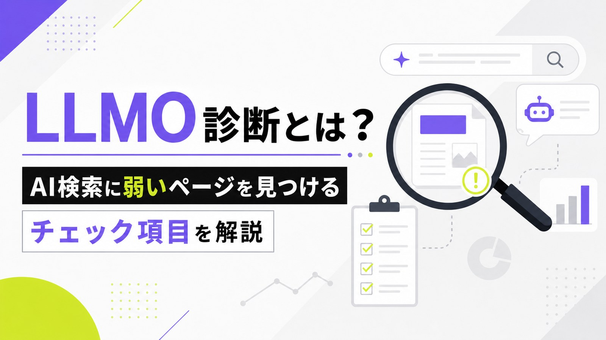
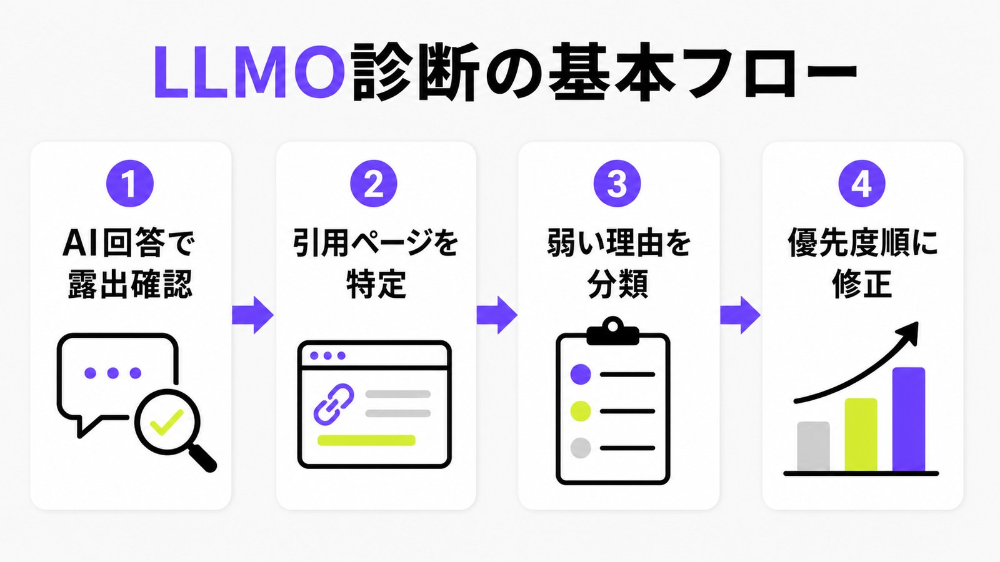
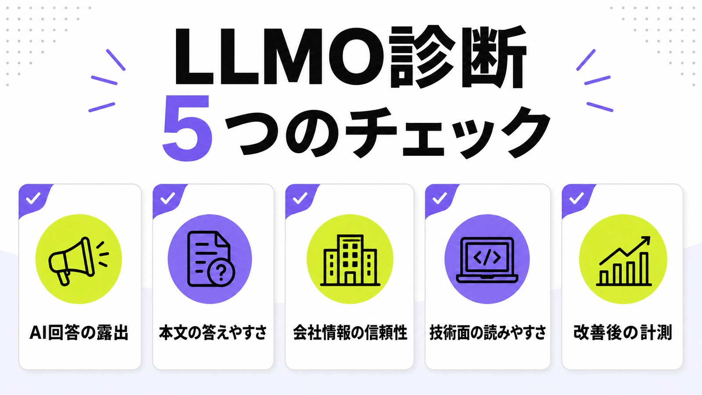
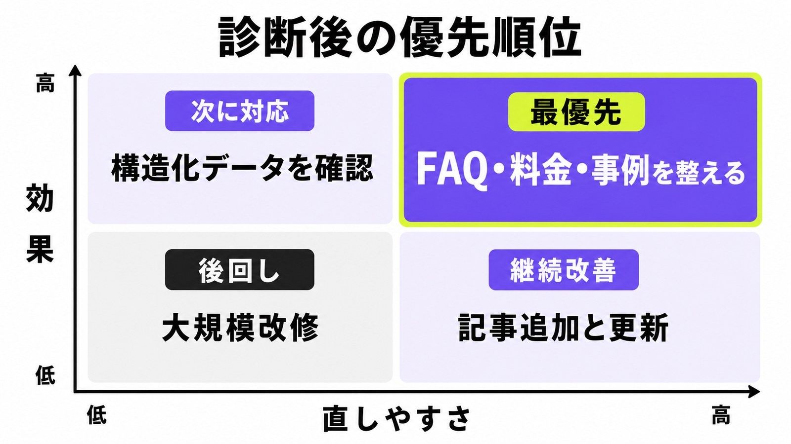

LLMO診断とは？AI検索に弱いページを見つけるチェック項目を解説

LLMO診断とは、ChatGPT、Google AI Overviews、Perplexity、CopilotなどのAI回答で、自社名や自社ページがどう扱われているかを調べ、引用されにくい理由を見つける作業です。
SEO診断が「検索順位や技術面を見る作業」だとすると、LLMO診断は「AIが回答を作るときに、自社を候補に入れやすいか」を見ます。AIに出ない原因は、記事不足だけでなく、会社情報、料金、事例、FAQ、構造化データ、robots.txt、内部リンクの弱さにもあります。
この記事では、GSC控えで見つかった「LLMO診断」の検索意図に合わせて、初心者でも確認しやすいチェック項目と、診断後に何から直すべきかを説明します。まず全体像を知りたい方はLLMO対策とは何かもあわせて確認してください。
目次

LLMO診断とは何を見る作業か
LLMO診断では、AI回答で自社が見つかるか、どのページが引用されるか、なぜ競合が出て自社が出ないのかを見ます。点数を付けて終わりではなく、直すページと順番を決めるための作業です。
AI回答で自社がどう扱われるかを見る
最初に見るのは、AI回答の中で自社が候補に入っているかです。狙う質問を入れて、自社名、サービス名、URL、競合名、引用元が出るかを記録します。たとえば「中小企業 LLMO対策 会社」「ChatGPT 会社名 出すには」のように、見込み客が聞きそうな質問で確認します。大切なのは、単に出たか出ないかではなく、どの文脈で出たかを見ることです。
自社名が出ても、説明が古い、料金が違う、競合より根拠が薄い場合は改善が必要です。逆に、自社ページが引用されなくても、競合ページがどんな表現で引用されているかを見ると、足すべきFAQ、事例、料金説明が分かります。
SEO診断との違いは「引用される理由」まで見ること
SEO診断は、順位、表示回数、クリック、インデックス、ページ速度、見出し、内部リンクなどを見ます。LLMO診断もこれらを使いますが、さらに「AIが答えを作るときに引用しやすい情報単位になっているか」を見ます。検索順位が高くても、答えが曖昧ならAI回答には使われにくいことがあります。LLMO診断では、引用される理由まで分解します。
たとえば、料金ページがない会社は「費用感を比較したい」質問で弱くなります。事例が薄い会社は「実績がある会社」を探す質問で弱くなります。SEOの数字だけではなく、AIが回答に使える材料がページ内にあるかを見るのが違いです。
“helpful, reliable information that's created to benefit people”
出典：Google Search Central「Creating helpful, reliable, people-first content」
Googleは、人の役に立つ信頼できる情報を重視すると説明しています。LLMO診断でも、AIのためだけに不自然な文章を増やすのではなく、人が読んで判断できる情報があるかをまず見ます。

診断前に決める3つの準備
LLMO診断は、いきなりツールを回すより、先に見る質問、ページ、数字を決めたほうが失敗しません。準備が曖昧だと、診断結果を見ても「結局、何を直すのか」が分からなくなります。
狙う質問を10〜20個に絞る
まず、見込み客がAIに聞きそうな質問を10〜20個に絞ります。商品名だけでなく、「おすすめ会社」「費用」「選び方」「比較」「導入事例」「自社の業種名」を組み合わせます。数を増やしすぎると記録が続かないため、最初は売上に近い質問から選びます。診断は広く見るより、買う前の質問に集中したほうが改善につながります。
AIMAの場合なら、「LLMO対策 会社」「AI検索対策 中小企業」「ChatGPT 会社名 出すには」「AI Overviews 表示調査」などが候補です。すでにSearch Consoleで表示回数があるキーワードも、診断質問に入れると現実に近い確認ができます。
代表ページと競合ページを並べる
次に、自社の代表ページと競合ページを並べます。自社はトップページ、サービスページ、料金、事例、FAQ、関連ブログを見ます。競合は、AI回答や検索結果でよく出るページを2〜4件ほど確認します。競合が何を詳しく書いているか、どのページが引用されているかを見れば、自社に足りない情報が分かります。ここではページ単位で比較することが大切です。
今回の競合確認では、LLMO診断チェックリスト、38項目の診断、10項目の実装優先度、無料診断ツールのページが多く見られました。共通して、AI回答の露出、構造化データ、FAQ、E-E-A-T、改善優先度を扱っています。
Search Consoleと問い合わせ内容も使う
AI回答だけを見ると、今すぐの売上とのつながりが見えにくくなります。Search Consoleの表示回数、クリック、平均順位、問い合わせフォームでよく聞かれる質問も一緒に見ます。表示はあるのにクリックが弱いキーワードは、AI検索でも説明不足の可能性があります。診断では、AI画面だけでなく実際の検索データも使いましょう。
たとえば、GSC控えでは「LLMO診断」が表示55回、クリック1回、平均順位10.27、「LLMO 診断」が表示41回、クリック0回、平均順位19.63でした。表示はあるのにクリックが弱いため、診断の意味と手順を説明する記事を作る価値があります。
LLMO診断のチェック項目
LLMO診断では、AI回答の露出、本文の答えやすさ、信頼情報、技術面、改善後の計測を見ます。全部を一度に完璧にする必要はありません。弱い場所を見つけ、直す順番を決めることが目的です。
AI回答の露出と引用元を確認する
ChatGPT、Google AI Overviews、Perplexity、Copilotなどで、決めた質問を入力し、自社名、競合名、引用元URL、回答の表現を記録します。毎回の回答は少し変わるので、同じ質問を日を分けて見ると傾向が分かります。自社が出ない場合でも、競合が出る理由を見れば改善のヒントになります。まずは露出の有無を表にしましょう。
記録するときは、スクリーンショットだけで終わらず、質問文、日時、AIサービス名、出た会社名、引用URL、気づいた不足情報を残します。あとから改善前後を比べるためです。AIMAでは、AI回答引用調査やChatGPT引用率調査のように、継続して見られる形にすることを重視します。
本文が質問に直接答えているか見る
AIは質問への答えを作るため、ページ本文に答えがないと引用しにくくなります。見出しが質問に近いか、冒頭に結論があるか、料金や対象者が具体的か、箇条書きや表で整理されているかを見ます。「詳しくはお問い合わせください」だけでは、AIにも人にも判断材料が足りません。診断では、質問への答えがページ内にあるかを確認します。
特にサービスページでは、対象者、課題、支援範囲、料金、納品物、期間、よくある質問を本文で書きます。画像の中だけに重要情報を入れると、検索エンジンやAIが読み取りにくい場合があります。本文で説明し、必要に応じて表やFAQで補うのが安全です。
会社情報・監修者・実績が信頼できるか見る
AI検索では、誰が発信している情報かも大切です。会社概要、代表者、監修者、所在地、事業内容、実績、事例、外部掲載、問い合わせ先が見えるかを確認します。特にBtoBでは、サービス内容だけでなく「この会社に相談してよいか」が判断されます。診断では、会社の信頼を支える根拠情報の不足を見つけます。
AIMAのような支援会社なら、LLMOに特化していること、相談回数の上限がないこと、月額5万円で始められること、記事作成や修正まで支援範囲に含むこと、最低契約期間がないことを、サービスページやFAQで繰り返し確認できる状態にします。
robots.txt・noindex・構造化データを確認する
重要ページがクローラーに読めるかも必ず見ます。robots.txtで止めていないか、noindexが残っていないか、canonicalが別URLを向いていないか、構造化データが本文と一致しているかを確認します。ChatGPT Searchに出したい場合は、OpenAIのOAI-SearchBotを不要に止めていないかも見ます。ここでの目的は、読めない原因をなくすことです。
ただし、非公開情報や会員限定ページまで開ける必要はありません。公開してよいサービス情報、料金、事例、FAQを読める状態にし、公開すべきでない情報は出さないよう分けます。構造化データは本文にない情報を隠して入れるものではなく、見える情報の意味を補助するものです。
“OAI-SearchBot is for search.”
改善後に測れる状態を作る
診断して終わりではなく、改善後に変化を見られる状態を作ります。Search Consoleの表示回数とクリック、AI回答での引用状況、問い合わせ数、問い合わせ内容、指名検索、重要ページの閲覧を毎月見ます。AI検索はまだ計測が難しい面があるため、複数の数字を合わせて見ます。最初から完璧な計測を求めず、同じ条件で記録することが大事です。
Bing Webmaster ToolsではAI回答で引用されたURLやクエリを見られるAI Performanceも公開されています。ChatGPTやGoogle AI Overviewsには同じ粒度の管理画面がないため、手動確認やログ、問い合わせ内容も使って、変化を見逃さないようにします。
“AI Performance extends those insights to AI-generated answers.”
出典：Bing Webmaster Blog「Introducing AI Performance in Bing Webmaster Tools」

診断後の改善優先度
診断結果を見たら、すぐ直せて効果が出やすい順に進めます。よくある失敗は、いきなり大規模リニューアルや大量記事制作に進むことです。まずはAIと人が判断に使う情報を足しましょう。
すぐ直す：FAQ・料金・事例
最優先は、FAQ、料金、事例です。AI回答で比較されるとき、費用感、支援範囲、実績、向いている会社、契約条件が足りないページは弱くなります。FAQには営業でよく聞かれる質問を入れ、料金には月額費用と含まれる作業を入れ、事例には課題、実施内容、結果を入れます。まずは判断材料を増やすことが近道です。
AIMAなら、月額5万円、相談回数の上限なし、記事作成・記事修正込み、最低契約期間なしという強みを、サービスページとFAQで分かるようにします。費用が気になる読者にはLLMO対策の費用相場へ内部リンクすると、比較検討もしやすくなります。
次に直す：内部リンク・構造化データ
次に、関連ページをつなぎ、構造化データを整えます。サービスページから料金、事例、FAQ、関連ブログへリンクし、ブログからサービスページや無料LLMO診断へ戻します。Article、FAQPage、Organizationなどの構造化データは、本文と一致する範囲で入れます。ここで大事なのは、ページ同士の意味をつなげることです。
内部リンクが弱いと、AIにも人にも「このサイトは何に詳しいのか」が伝わりにくくなります。LLMO、AIO、GEO、AI検索対策、ChatGPT引用調査など、近いテーマの記事を自然につなげると、専門性のまとまりが見えやすくなります。
続ける：記事追加と再診断
最後に、足りない検索意図へ記事を追加し、毎月再診断します。1回直して終わりではなく、AI回答や検索結果の変化を見ながら、FAQ、事例、料金、比較記事、業種別記事を増やします。新しい記事を作るときも、見出し、結論、表、FAQ、内部リンクを意識します。継続では、作って直す運用が重要です。
AIMAでは、月額5万円の範囲で相談、記事作成、記事修正、関連する実装改善を進められるため、診断後の細かい修正を止めずに回しやすい形です。最低契約期間もないため、まず弱いページから小さく始められます。

LLMO診断に関するよくある質問
LLMO診断は無料ツールだけで十分ですか？
入口としては便利ですが、無料ツールだけで十分とは限りません。ツールは構造化データや見出しなどを広く見られますが、AI回答で実際にどう見られるか、競合との差は何か、問い合わせにつながる情報が足りるかは人が確認したほうが分かりやすいです。
LLMO診断はどのくらいの頻度で行うべきですか？
まず初回診断で弱いページを見つけ、主要ページを直した後は月1回の確認を目安にします。AI回答は変わるため、毎日細かく追うより、同じ質問、同じ記録方法で月ごとに変化を見るほうが改善に使いやすいです。
診断後は記事を増やせばいいですか？
記事追加は大切ですが、それだけでは足りません。料金、事例、FAQ、会社情報、内部リンクが弱いままだと、記事だけ増やしてもAIと人の判断材料が不足します。先に基礎ページを整えると、追加記事の効果も出しやすくなります。
まとめ
LLMO診断は、AI回答で自社が出るかを眺めるだけの作業ではありません。自社が出ない理由を、本文、信頼情報、技術設定、内部リンク、計測の面から分解し、直す順番を決める作業です。
まずは、狙う質問を10〜20個に絞り、AI回答での露出、引用元、競合ページ、自社ページの不足を記録してください。そのうえで、FAQ、料金、事例、会社情報、構造化データ、内部リンクを優先度順に直します。
AIMAは、LLMO・AI検索対策に特化し、月額5万円、相談回数の上限なし、記事作成・修正込み、最低契約期間なしで支援します。自社サイトの弱いページを知りたい方は、無料LLMO診断またはお問い合わせからご相談ください。